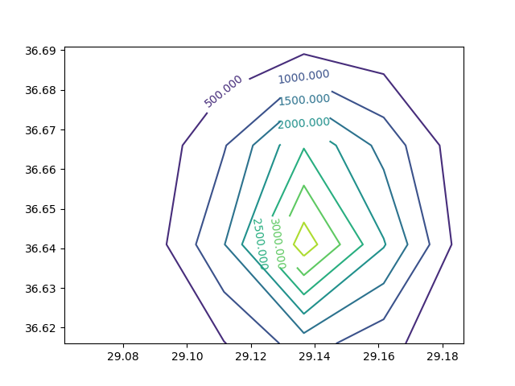

Yükseklik Verisini Kontur olarak Folium Haritasında Göstermek
Matplotlib'de contour komutu x,y ızgarasında üç boyutta yükseklik
olarak kabul edilebilecek z verisini "kuşbakışı" olarak
gösterebilen, kesit seviyelerini, bir nevi topografik haritayı
hesaplabilen bir komuttur. Peki bu seviyeleri alıp Matplotlib ile
direk bağlantısı olmayan Folium [3] haritalarına taşımak istesek bunu
nasıl yaparız? Üç boyutlu yükseklik verisini iki boyutlu kesit
seviyelerine dönüştürmek kolay değil, contour içindeki kodu bu iş
için kullansak tekrar yazmaya gerek kalmazdı. Bunu yapmak mümkün,
çünkü contour bize seviyeleri temsil eden parçaları dondürebiliyor.
Örnek üzerinde görelim. Belli x,y değerleri arasında bir ızgara
yaratalım (bu değerler TR haritasında özel bir yere tekabül edecek
şekilde seçildi, ki sonra Folium'da gösterim yapabilelim), ve ızgaraya
bir tane "tepe" koyalım, bunu iki degiskenli (bivariate, ve üç
boyutlu) Gaussian fonksiyonu ile yapabiliyoruz, ve kesit seviyelerini
gösterelim,
import matplotlib
import numpy as np
import matplotlib.cm as cm
import matplotlib.mlab as mlab
import matplotlib.pyplot as plt
matplotlib.rcParams['xtick.direction'] = 'out'
matplotlib.rcParams['ytick.direction'] = 'out'
def bivariate_normal(X, Y, sigmax=1.0, sigmay=1.0,
mux=0.0, muy=0.0, sigmaxy=0.0):
Xmu = X-mux
Ymu = Y-muy
rho = sigmaxy/(sigmax*sigmay)
z = Xmu**2/sigmax**2 + Ymu**2/sigmay**2 - 2*rho*Xmu*Ymu/(sigmax*sigmay)
denom = 2*np.pi*sigmax*sigmay*np.sqrt(1-rho**2)
return np.exp(-z/(2*(1-rho**2))) / denom
delta = 0.025
x = np.arange(29.06161, 29.20870, delta)
y = np.arange(36.61599, 36.70624, delta)
X, Y = np.meshgrid(x, y)
Z = 10*bivariate_normal(X, Y, 0.02, 0.02, 29.13920, 36.64653)
plt.figure()
CS = plt.contour(X, Y, Z )
plt.clabel(CS, inline=1, fontsize=10)
plt.savefig('elev1.png')

Sanki bir "dağa" üstten bakıyoruz, dağın eteklerinde 500 metre yükseklik var, sonra giderek yükseliyor, ve en tepede 3000 metreye ulaşıyoruz.
Üstteki grafiği oluşturan ham bilgilere erişmek mümkün. Gördüğümüz
gibi çağrıyı CS = plt.contour ile yaptık, döndürülen CS içinde
gerekli bilgiler var. Bu bilgiler bölümler (segments) olarak
tutulmuş, mesela
print (CS.levels)
[ 0. 500. 1000. 1500. 2000. 2500. 3000. 3500. 4000.]
print (len(CS.allsegs))
9
sonucunu verir. 1'inci bölümdeki 0'ıncı alt bölümde,
CS.allsegs[1][0]
Out[1]:
array([[29.16850299, 36.61599 ],
[29.18289603, 36.64099 ],
[29.17913935, 36.66599 ],
[29.16161 , 36.68398265],
[29.13661 , 36.68902999],
[29.11161 , 36.67980347],
[29.0986095 , 36.66599 ],
[29.09359308, 36.64099 ],
[29.11161 , 36.61651895],
[29.11231435, 36.61599 ]])
görülüyor. İşte bu noktalar kesit seviyelerini oluşturan çizgilerin baş ve son noktaları. Eğer o çizgileri ayrı ayrı kendimiz çizmek istesek,
plt.figure()
CS = plt.contour(X, Y, Z)
for i in range(len(CS.allsegs)):
for li in range(len(CS.allsegs[i])):
x = CS.allsegs[i][li][:,0]
y = CS.allsegs[i][li][:,1]
plt.plot(x,y,'r-')
plt.savefig('elev3.png')
Aynı grafiği Folium ile yapmak için,
import folium
clat,clon=36.64653, 29.13920
m = folium.Map(location=[clat, clon], zoom_start=11, tiles="Stamen Terrain")
for i in range(len(CS.allsegs)):
for li in range(len(CS.allsegs[i])):
points = []
x = CS.allsegs[i][li][:,0]
y = CS.allsegs[i][li][:,1]
for lon,lat in zip(x,y): points.append([lat,lon])
folium.PolyLine(points, color='red', weight=1.0, opacity=1).add_to(m)
m.save('elev.html')
Sonuçlar şurada görülebilir.
Yükseklik verilerini alma tekniklerini [4]'te göstermiştik; bir bölgedeki yükseklik verisini, sonra o veriyi kullanıp daha yüksek çözünürlü yükseklik verisini aradeğerleme ile hesaplama teknikleri o yazıda bulunabilir.
Kaynaklar
[1] [Tutorialspoint](https://www.tutorialspoint.com/how-to-get-coordinates-from-the-contour-in-matplotlib)
[2] [Stackoverflow](https://stackoverflow.com/questions/19418901/get-coordinates-from-the-contour-in-matplotlib)
[3] [Haritalamak](../../2020/02/haritalamak.html)
[4] [Yükseklik (Elevation) Verileri](../../2019/04/elevation.html)
Yukarı